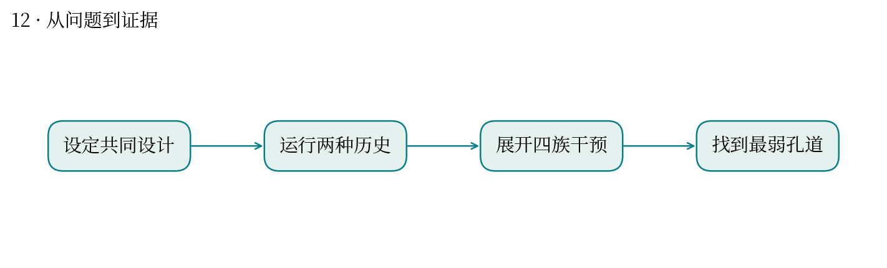
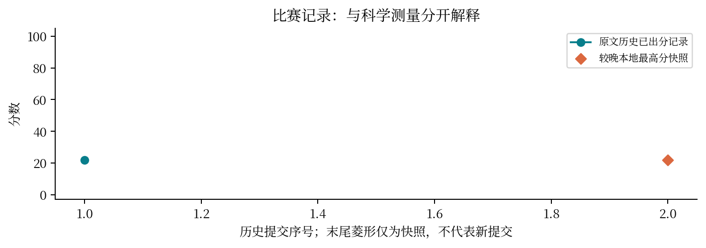

现实中想解决什么：一个分区过程整体平均不错，是否仍存在几乎失效的局部区域？
从计算到应用：局部取向与处理历史 → 最弱区域产率 → 整体工艺的可靠下限。
这次实际做到哪一步：本题 mean yield 与 weakest yield 差别极大，说明平均数会掩盖局部失败。
还缺什么：题目的产率是模型量。映射到真实过程需确定物理载体、局部响应与控制变量的实验意义。
让 A 通过、把 B 留下，为什么平均效果好仍然不够？
最高分快照：21.93 · 2026-10-12T01:11:24+08:00
多个孔道串联时，最差孔道可能限制整体产出。题目定义的选择性产率等于 A 的释放比例乘 B 的保留比例。
联合优化 504 个二元取向和 24 区处理变量，并在干预族及正反升温历史下检查最弱局部产率。
旧记录显示 mean yield 约 0.111，而 weakest yield 约 6.3×10⁻¹⁰；平均数无法替代题目要求的最弱链量。
时间单位是 hour；每类正取向库存与处理总预算是硬约束。不能用平均表现替换最小表现。
可类比分析流水线的瓶颈环节：前面步骤的平均质量高，仍可能被一个严重失败环节限制。它不是统计平均样本的场景。
应审查评分是否真正奖励声明的最弱链目标。目前材料只支持指出目标解释风险，尚不足以断定评分实现错误。


| attempt | 提交时间 | 分数 | 状态 |
|---|---|---|---|
| 52029 | 10-11 00:45:42 | 21.9262 | 已出分 |
源文件 SHA256 见 证据清单；用 scripts/build.py 重建图表。